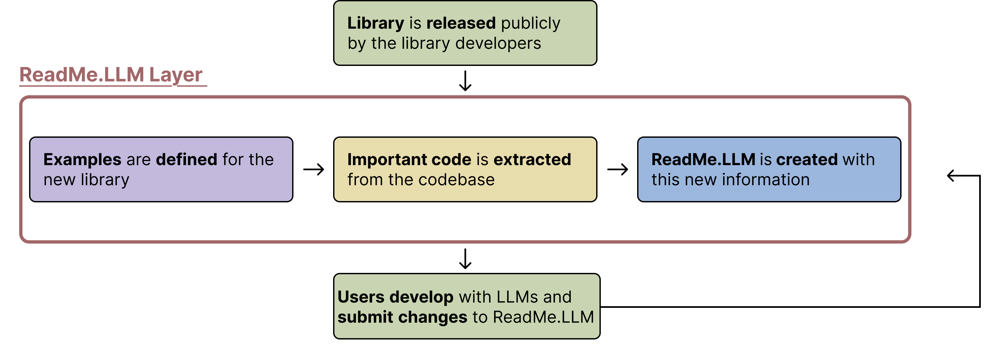

TL;DR
The Challenge
Many developers use LLMs to generate code with existing software libraries, leveraging these tools to speed up development or simplify onboarding. However, not all libraries are equally represented in LLM training data. Newer or smaller libraries often lack online documentation, making it difficult for LLMs to generate accurate code leading to often misused or misrepresented in AI-generated code. In contrast, well-established libraries like Pandas have extensive resources that help models produce reliable output.
Our Solution

We propose ReadMe.LLM, a structured framework that helps library makers make their tools more accessible to LLMs:
- Optimized Documentation for LLMs: ReadMe.LLM provides structured descriptions of the codebase and other metadata.
- Seamless Integration: Library developers attach ReadMe.LLM to their codebase, allowing LLMs to accurately utilize the library without requiring additional fine-tuning.
- Enhanced Developer Experience: Developers simply copy and paste the ReadMe.LLM contents into the LLM chat window and ask their query. The LLM now having better context about the library—can select appropriate functions to correctly implement users' design.
Bridging the LLM Knowledge Gap
Real-World Examples: When LLMs Fail
We initially conducted experiments without any context across multiple LLMs: GPT-4o, Sonar Huge (Llama3 70B), Claude 3.5 and 3.7 Sonnet, Grok-2, and Deepseek R1. We test two distinct libraries: DigitalRF and Supervision. DigitalRF, an academic library with limited documentation tests LLMs ability to handle libraries they are unlikely to have seen during training. Supervision, a modern, industry-run library, helps assess whether similar limitations persist for newer but more widely used libraries.
Case Study 1: DigitalRF [Link]
Task: For DigitalRF, we tasked the LLMs with writing a WAV file into HDF5 format. We obtained a WAV file (a 10-second long radio signal) containing I/Q data using the SDR++ application and tasked LLMs with converting it to a standardized HDF5 format.
Key Results:Without adding additional context through ReadMe.LLM, we observed poor performances across all 5 of the models ranging from just 20 to 40% success rates.

Case Study 2: Supervision Library [Link]
Task: For Supervision, we tasked LLMs with detecting and annotating cars in an image. We selected an image with multiple objects (such as people, or buildings) to introduce complexity and test the LLMs' ability to differentiate between relevant and irrelevant detections. The LLM had to identify all cars, add a confidence score annotation, save the bounding box coordinates, and crop each detected car.
Key Results: When attempting this task with no additional context, we observed that most of the models had mimal success rates ranging from just 0% to 20%. The sole exception was DeepSeek R1 which had an impressive success rate of 80%.

Who's Impacted?
Engineers
- Receive incorrect or non-functional code
- Experience frustration and prolonged debugging
- Increase company resource expenditure
Library Developers
- Risk losing potential users
- See developers abandon their tools
- Compete against alternatives that work seamlessly with LLMs
Ecosystem Consequences
This dynamic is reshaping the software ecosystem—smaller libraries risk lack-of-use not due to their technical merit but because LLMs fail to represent them accurately. For developers, this means fewer viable options and slower innovation.
ReadMe.LLM
Our approach shifts the focus from fixing LLMs' limitations to empowering libraries to be LLM-friendly, fostering adoption of emerging libraries. The respective workflows for a Library Developer and Engineer are illustrated below:
Library Developer workflow:
Engineer workflow:
ReadMe.LLM's Success
We repeated the experiments on DigitalRF and Supervision mentioned in the previous section, and we observed significantly better results using the ReadMe.LLM framework:
Case Study 1: DigitalRF
Key Results: After experimenting with several different types of ReadMe.LLM's we observed that each model had a ReadMe.LLM that resulted in a 100% success rate.

Case Study 2: Supervision Library
Key Results: We created an optimal ReadME.LLM for Supervision, and as can be seen in the graph below, we were able to reach 100% success rate across all 5 models for this task.
Demo Video
Watch our demonstration of how ReadMe.LLM helps improve code generation for engineers. You can access all of the materials used in the video in the below "Try it Out!" section.
Try it Out!
Follow the steps in the screen shot below to generate high quality code with the help of ReadMe.LLM!

Here is an example task using the Supervision Library, feel free to try it with and without ReadMe.LLM! See what happens
Task:
Using the Supervision Library, find all the people in the “original_image” and annotate them with a blur. Overlay the detected people in the original image with “oski_image”. Print both the annotated image and the overlayed image.
ReadMe.LLM:
Here is the expected output is the code is correct

Meet Our Team

Alejandro Gómez Soteres

Sandya Wijaya

Shriyanshu Kode

Jacob Bolano

Yue Huang

Anant Sahai
Cite
If you rely on ReadMe.LLM and artifacts, we request that you cite to the underlying paper.
Contact
readmellm.ucb@gmail.com